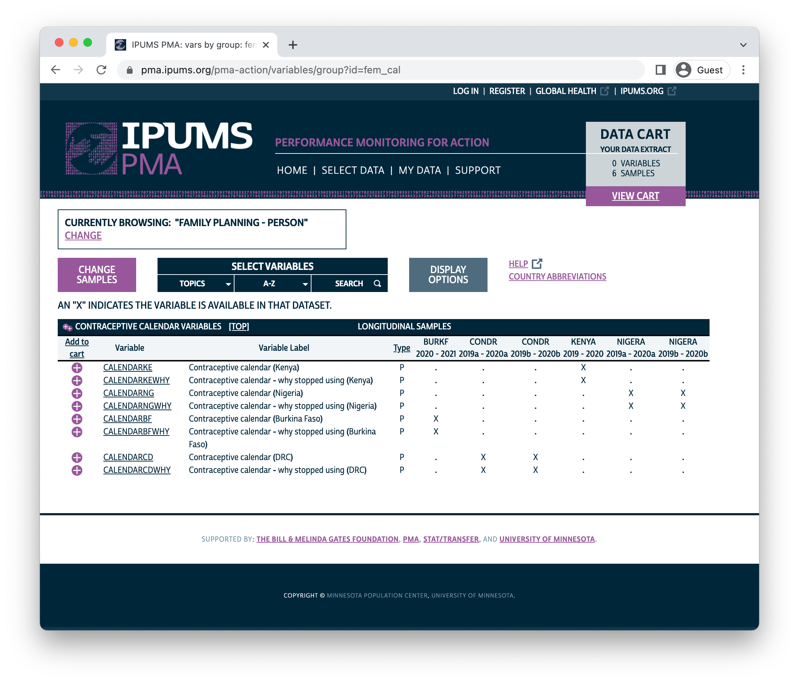
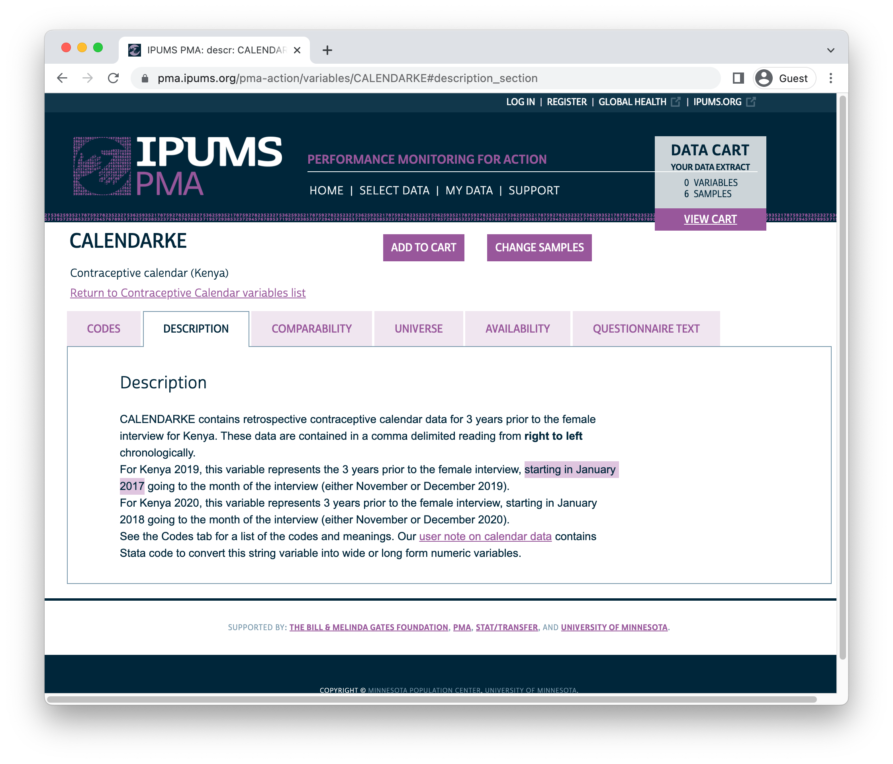
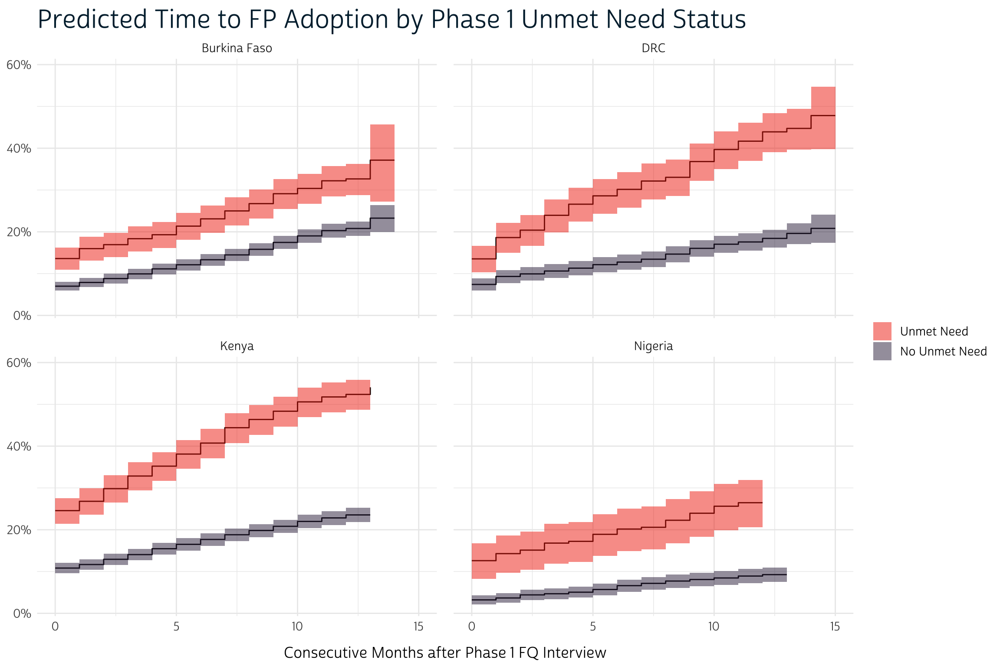
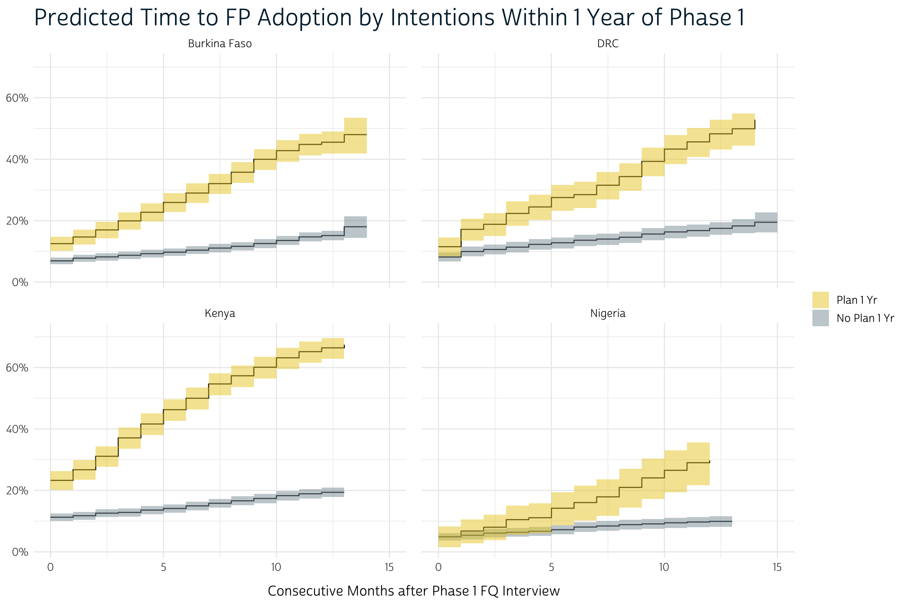
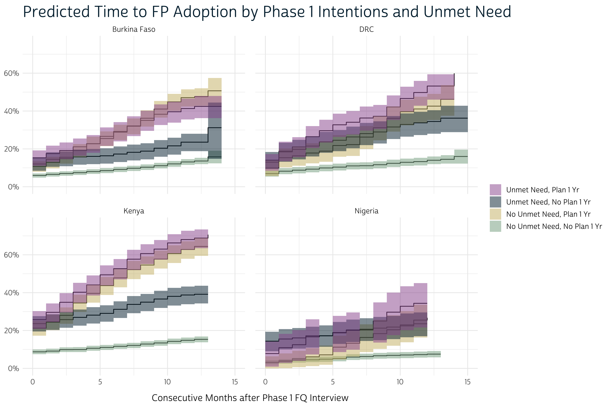

We’re wrapping up our introduction to the new PMA Panel Surveys this week with an update to a topic we first introduced one year ago when IPUMS PMA released Phase 1 data from Burkina Faso, DRC, Kenya, and Nigeria. With the release of Phase 2 data from these countries this spring, it’s now possible to combine monthly contraceptive calendar data collected at multiple timepoints, each covering partially overlapping periods in the reproductive health history of every panel member.
The contraceptive calendar data are particularly exciting because they offer researchers an opportunity to explore longitudinal analysis techniques that are otherwise not feasible with the first two phases of panel observations. For example, we’ll demonstrate how you might use survival analysis to test whether women with unmet need or plans to adopt a family planning method at Phase 1 were quicker to begin using one in the months between Phase 1 and Phase 2. Additionally, because calendar data are collected once per phase, there are unique opportunities to study the reliability of self-reporting for the same month recalled at different times (Anglewicz et al. 2022).
In this post, we’ll share code you can use to parse and analyze calendar data collected in each phase in a data extract containing multiple samples. We’ll use the survival package for R to model “time-to-event” for adoption of a family planning method for women who were not using one on the day of the Phase 1 interview. Finally, we’ll use ggplot2 to build a Kaplan-Meier curve for the cumulative incidence of adoption over each month between the Phase 1 and Phase 2 interviews.
Setup
Over on the contraceptive calendar variable group page, you’ll find two types of calendars for every sample:

We refer to the main calendar as the “contraceptive calendar”, and it includes the following variables:
This calendar represents contraceptive use, pregnancy, pregnancy termination, and birth information for each month preceding the interview for the Female Questionnaire in a particular phase of the panel study. Women are asked to recall their status for each month in the calendar period, and their responses are recorded in a single comma delimited string with the following codes:
B- BirthP- PregnantT- Pregnancy ended0- No family planning method used1- Female Sterilization2- Male Sterilization3- Implant4- IUD5- Injectables7- Pill8- Emergency Contraception9- Male Condom10- Female Condom11- Diaphragm12- Foam / Jelly13- Standard Days / Cycle beads14- LAM30- Rhythm method31- Withdrawal39- Other traditional methods
The second calendar is the “discontinuation calendar”, and it gives the reason why a woman stopped using a family planning method for each month following an episode of continuous use. This calendar is represented by the following variables:
Like the main contraceptive calendar, the discontinuation calendar is a single comma delimited string. It contains the following codes for months when a method was discontinued (and is blank otherwise):
1- Infrequent sex / husband away2- Became pregnant while using3- Wanted to become pregnant4- Husband / partner disapproved5- Wanted more effective method6- Side effects / health concerns7- Lack of access / too far8- Costs too much9- Inconvenient to use10- Up to God / fatalistic11- Difficult to get pregnant / menopausal12- Marital dissolution / separation96- Other
We’ve created a data extract containing all of the eight calendar variables, plus these additional variables that we’ll need for our analysis:
- RESULTFQ - Result of female questionnaire
- FQINSTID - Unique ID for female questionnaire
- RESIDENT - Household residence / membership
- COUNTRY - Country of residence
- INTFQMON & INTFQYEAR - Date of Female Questionnaire interview
- FPCURREFFMETHRC - Most effective current family planning method (recoded1)
- PREGNANT - Current pregnancy status
- UNMETYN - Total unmet need
- FPPLANVAL - When will start using FP method in the future - value
- FPPLANWHEN - When will start using FP method in the future - unit
- KID1STBIRTHMO & KID1STBIRTHYR - Date of first childbirth
- LASTBIRTHMO & LASTBIRTHYR - Date of most recent childbirth
- PANELBIRTHMO & PANELBIRTHYR - Date of childbirth during the panel study
- OTHERBIRTHMO & OTHERBIRTHYR - Date of any other childbirth during the calendar period
- PREGENDMO & PREGENDYR - Date of most recent pregnancy termination (miscarriage, abortion, or stillbirth)
- PANELPREGENDMO & PANELPREGENDYR - Date of pregnancy termination during the panel study (miscarriage, abortion, or stillbirth)
- FPBEGINUSEMO & FPBEGINUSEYR - Date of adoption for currently used family planning method
Our extract contains data from all available longitudinal samples.2 As in previous posts, we’ve
selected “Female Respondents” organized in wide format: each
row represents the Phase 1 and Phase 2 responses for
one female respondent. Variables from the Phase 1
questionnaire are named with the suffix _1
(e.g. CALENDARKE_1), while variables from the Phase 2
questionnaire are named with the suffix _2
(e.g. CALENDARKE_2).
We’ll load the data extract into R together with each of the packages we’ll feature in this post. Then, we’ll drop cases for women who did not fully complete the Female Questionnaire or were not members of the de facto population in both phases.
Finally, we’ll modify two variables to make this post a bit easier to read. First, we’ll transform COUNTRY into a factor containing a two-letter ISO country code for each sample.3 Second, we’ll generate a short ID for each woman based on her location in the dataframe: this is for display purposes only - we recommend that users adopt FQINSTID for their own analyses.
library(ipumsr)
library(tidyverse)
library(survival)
dat <- read_ipums_micro(
ddi = "data/pma_00111.xml",
data = "data/pma_00111.dat.gz"
)
dat <- dat %>%
filter(
RESULTFQ_1 == 1 & RESULTFQ_2 == 1,
RESIDENT_1 %in% c(11, 22) &
RESIDENT_2 %in% c(11, 22)
) %>%
mutate(COUNTRY = COUNTRY %>% as_factor %>% recode(
"Burkina Faso" = "BF",
"Congo, Democratic Republic" = "CD",
"Kenya" = "KE",
"Nigeria" = "NG"
)) %>%
rowid_to_column("ID")
Century Month Codes (CMC)
As shown above, we’ll be referencing several variables representing dates in this post. Generally, IPUMS PMA publishes every date with two variables: one representing the month (e.g. INTFQMON) and one representing the year (e.g. INTFQYEAR). Sometimes, you’ll notice a third variable representing dates with a century month code (CMC): each CMC represents the number of months that have passed between a given date and January 1900. CMC dates are particularly useful for calculating the time between events because they replace two variables (with different units) with one simple integer.
Some CMC variables are available directly from IPUMS PMA (e.g. INTFQCMC), but we’ll create our own CMC variables for all of the dates we’ll reference in this post. CMC dates are simply calculated as follows:
\[CMC = Month + 12*(Year – 1900)\]
Because all or part of a date may be missing (the
month or year), and because certain dates may be NIU (not in
universe) (e.g. “date of most recent childbirth” for women who
have never given birth), we’ll need to consider specific circumstances
where we should use the value NA in a CMC variable.
In the contraceptive calendar, we’ll be measuring the time between
events in months. Therefore, it would be insufficient to
include cases where a woman only reported the year in which an
event occurred. We’ll create a function that generates NA
values if the numeric code representing a month is 90 or
higher (all valid months are coded 1 through 12), and if a year is
9000 or higher (all valid years are in the 1900s or 2000s).
Otherwise, we’ll use the CMC formula to calculate the appropriate CMC
value for each date.
Let’s call this function make_cmc:
make_cmc <- function(mo, yr){
case_when(mo < 90 & yr < 9000 ~ mo + 12*(yr - 1900))
}
You can apply make_cmc to any combination of variables
representing the month and year for a date. We’ll create one
CMC for each date in our data extract.
dat <- dat %>%
mutate(
INTFQCMC_1 = make_cmc(INTFQMON_1, INTFQYEAR_1),
INTFQCMC_2 = make_cmc(INTFQMON_2, INTFQYEAR_2),
KID1STBIRTHCMC_1 = make_cmc(KID1STBIRTHMO_1, KID1STBIRTHYR_1),
KID1STBIRTHCMC_2 = make_cmc(KID1STBIRTHMO_2, KID1STBIRTHYR_2),
LASTBIRTHCMC_1 = make_cmc(LASTBIRTHMO_1, LASTBIRTHYR_1),
LASTBIRTHCMC_2 = make_cmc(LASTBIRTHMO_2, LASTBIRTHYR_2),
OTHERBIRTHCMC_1 = make_cmc(OTHERBIRTHMO_1, OTHERBIRTHYR_1),
OTHERBIRTHCMC_2 = make_cmc(OTHERBIRTHMO_2, OTHERBIRTHYR_2),
PANELBIRTHCMC_1 = make_cmc(PANELBIRTHMO_1, PANELBIRTHYR_1),
PANELBIRTHCMC_2 = make_cmc(PANELBIRTHMO_2, PANELBIRTHYR_2),
PREGENDCMC_1 = make_cmc(PREGENDMO_1, PREGENDYR_1),
PREGENDCMC_2 = make_cmc(PREGENDMO_2, PREGENDYR_2),
PANELPREGENDCMC_1 = make_cmc(PANELPREGENDMO_1, PANELPREGENDYR_1),
PANELPREGENDCMC_2 = make_cmc(PANELPREGENDMO_2, PANELPREGENDYR_2),
FPBEGINUSECMC_1 = make_cmc(FPBEGINUSEMO_1, FPBEGINUSEYR_1),
FPBEGINUSECMC_2 = make_cmc(FPBEGINUSEMO_2, FPBEGINUSEYR_2)
)
Let’s check our work. For example, consider how we’ve handled
PANELBIRTHCMC_2 - the date of a woman’s childbirth that
happened during the panel study. If we count the dates by
PANELBIRTHMO_2 and use tail to examine the last
few rows, we see that one woman reported code 97 indicating
that she did not know the precise month of birth. Meanwhile, there were
15,064 cases coded 99 indicating that they were NIU
(not in universe) (no birth occurred during the panel study).
We’ve coded both of these case types with the value NA; all
other values follow the CMC formula to count the number of months
between January 1900 and the month of birth.
# A tibble: 6 × 4
PANELBIRTHMO_2 PANELBIRTHYR_2 PANELBIRTHCMC_2 n
<int+lbl> <int+lbl> <dbl> <int>
1 12 [December] 2017 1416 1
2 12 [December] 2018 1428 13
3 12 [December] 2019 1440 99
4 12 [December] 2020 1452 90
5 97 [Don't know] 2017 NA 1
6 99 [NIU (not in universe)] 9999 [NIU (not in universe)] NA 15064Merging Country Calendars
You may be wondering: why does IPUMS PMA publish a separate calendar variable for each country?
In fact, the width of each calendar variable differs by the number of months women were asked to recall in a particular sample. This, in turn, depends on the range of dates in which women were interviewed for the Female Questionnaire in a particular phase.
Start and Stop Dates
You can find the precise range of dates included in each calendar on the description tab for each country’s calendar variable.

The first month in each country’s calendar is listed below:
| Country | Phase 1 | Phase 2 |
|---|---|---|
| Burkina Faso | Jan 2018 | Jan 2018 |
| DRC | Jan 2017 | Jan 2018 |
| Kenya | Jan 2017 | Jan 2018 |
| Nigeria | Jan 2017 | Jan 2018 |
Before we can merge calendars for multiple samples, we’ll need to
determine the correct beginning and ending points for each woman’s
calendar. First, we’ll create CALSTART_1 and
CALSTART_2 to record the CMC date for the first month.
Next, we’ll create CALSTOP_1 and CALSTOP_2
to record the CMC date we created in INTFQCMC_1 and
INTFQCMC_2. These dates cover a range of months in each
sample.
| Country | Phase 1 | Phase 2 |
|---|---|---|
| Burkina Faso | Dec 2019 - Mar 2020 | Dec 2020 - Apr 2021 |
| DRC | Dec 2019 - Feb 2020 | Dec 2020 - Mar 2021 |
| Kenya | Nov 2019 - Dec 2019 | Nov 2020 - Dec 2020 |
| Nigeria | Dec 2019 - Jan 2020 | Dec 2020 - Feb 2021 |
Now, let’s take a look at the calendar variables we want to merge.
You’ll only find responses in the calendar for the country in which a
woman resides. The other calendars in her row will appear as an empty
character string, the value "". For example, notice that
the variable CALENDARKE_1 is blank for these women from
Burkina Faso:
# A tibble: 5,208 × 4
ID COUNTRY CALENDARBF_1 CALENDARKE_1
<int> <fct> <chr+lbl> <chr+lbl>
1 1 BF ,,,,,,,,,,0,0,0,0,0,0,0,0,0,0,0,0,B,P,P,P,P,P,P,P… ""
2 2 BF ,,,,,,,,,,,P,P,P,P,P,P,P,0,0,0,0,0,0,0,3,3,3,3,3,… ""
3 3 BF ,,,,,,,,,,,0,0,0,0,0,0,0,0,0,0,0,0,0,0,0,0,0,0,0,… ""
4 4 BF ,,,,,,,,,,,0,0,0,5,5,5,5,5,5,5,5,5,5,5,0,0,0,0,0,… ""
5 5 BF ,,,,,,,,,,,0,0,0,0,0,0,0,0,0,0,0,0,0,0,0,0,0,0,0,… ""
6 6 BF ,,,,,,,,,,,0,0,0,0,0,0,0,0,0,0,0,0,0,0,0,0,0,0,0,… ""
7 7 BF ,,,,,,,,,,,0,0,0,0,0,0,0,0,0,0,0,0,0,T,P,P,P,P,P,… ""
8 8 BF ,,,,,,,,,,,B,P,P,P,P,P,P,P,P,P,0,0,0,0,0,0,0,0,0,… ""
9 9 BF ,,,,,,,,,,,,3,3,3,3,3,3,3,3,3,3,3,3,3,3,3,3,3,3,3… ""
10 10 BF ,,,,,,,,,,,0,0,0,0,0,0,0,0,0,0,0,0,0,0,0,0,0,0,0,… ""
# … with 5,198 more rowsPivot Country Calendars
We’ll want to use pivot_longer
to reformat dat so that each calendar variable appears
in a separate row, including calendars collected in different
phases of the panel study. Let’s call our reformatted data frame
cals. For now, it will only include ID,
COUNTRY, and all variables that start with
CAL.
cals <- dat %>% select(ID, COUNTRY, starts_with("CAL"))
We’ll “pivot” cals in two steps. First, we’ll strip the
numeric suffix from each calendar variable: we’ll store this information
in a new column called PHASE. All of the calendar variables
from the same phase will then be stored in a separate row (resulting in
two rows per woman).
cals <- cals %>%
pivot_longer(
cols = starts_with("CAL"),
names_pattern = "(.*)_(.*)",
names_to = c(".value", "PHASE")
)
cals
# A tibble: 35,424 × 13
ID COUNTRY PHASE CALENDARBF CALENDARBFWHY CALENDARKE CALENDARKEWHY
<int> <fct> <chr> <chr+lbl> <chr+lbl> <chr+lbl> <chr+lbl>
1 1 BF 1 ",,,,,,,,,,0,0,0,… ",,,,,,,,,,,… "" ""
2 1 BF 2 ",,,,,,,,,,,3,3,3… ",,,,,,,,,,,… "" ""
3 2 BF 1 ",,,,,,,,,,,P,P,P… ",,,,,,,,,,,… "" ""
4 2 BF 2 ",,,,,,,,,,,,5,5,… ",,,,,,,,,,,… "" ""
5 3 BF 1 ",,,,,,,,,,,0,0,0… "" "" ""
6 3 BF 2 "" "" "" ""
7 4 BF 1 ",,,,,,,,,,,0,0,0… ",,,,,,,,,,,… "" ""
8 4 BF 2 ",,,,,,,,,,,,0,0,… ",,,,,,,,,,,… "" ""
9 5 BF 1 ",,,,,,,,,,,0,0,0… ",,,,,,,,,,,… "" ""
10 5 BF 2 "" "" "" ""
# … with 35,414 more rows, and 6 more variables: CALENDARNG <chr+lbl>,
# CALENDARNGWHY <chr+lbl>, CALENDARCD <chr+lbl>, CALENDARCDWHY <chr+lbl>,
# CALSTART <dbl>, CALSTOP <dbl>Before we “pivot” a second time, we’ll want to identify suffixes that
we can again strip and use as new column names (just as we did with
_1 and _2 when we created PHASE).
Let’s use FPSTATUS for the main contraceptive calendar, and
WHYSTOP for the discontinuation calendar. When we pivot_longer
again, these suffixes will appear as two new columns containing each
type of calendar.
cals <- cals %>%
rename_with(
~paste0(.x, "FPSTATUS"),
.cols = starts_with("CALENDAR") & !ends_with("WHY")
) %>%
rename_with(
~paste0(.x, "STOP"),
.cols = starts_with("CALENDAR") & ends_with("WHY")
) %>%
pivot_longer(
cols = starts_with("CALENDAR"),
names_pattern = "CALENDAR(..)(.*)",
names_to = c("COUNTRY_CAL", ".value"),
values_to = "CALENDAR_STRING"
)
Now, each woman occupies eight rows (4 country calendars per phase).
We’ve also stripped the 2-letter country code from each calendar name to
create COUNTRY_CAL: this indicates the country associated
with each calendar.
cals
# A tibble: 141,696 × 8
ID COUNTRY PHASE CALSTART CALSTOP COUNTRY_CAL FPSTATUS WHYSTOP
<int> <fct> <chr> <dbl> <dbl> <chr> <chr+lbl> <chr+l>
1 1 BF 1 1417 1442 BF ",,,,,,,,,,0,0,0,0,… ",,,,,…
2 1 BF 1 1417 1442 KE "" ""
3 1 BF 1 1417 1442 NG "" ""
4 1 BF 1 1417 1442 CD "" ""
5 1 BF 2 1417 1453 BF ",,,,,,,,,,,3,3,3,3… ",,,,,…
6 1 BF 2 1417 1453 KE "" ""
7 1 BF 2 1417 1453 NG "" ""
8 1 BF 2 1417 1453 CD "" ""
9 2 BF 1 1417 1441 BF ",,,,,,,,,,,P,P,P,P… ",,,,,…
10 2 BF 1 1417 1441 KE "" ""
# … with 141,686 more rowsLastly, we can drop any row where COUNTRY does not match
the value in COUNTRY_CAL:
# A tibble: 35,424 × 7
ID COUNTRY PHASE CALSTART CALSTOP FPSTATUS WHYSTOP
<int> <fct> <chr> <dbl> <dbl> <chr+lbl> <chr+l>
1 1 BF 1 1417 1442 ",,,,,,,,,,0,0,0,0,0,0,0,0,0,0,… ",,,,,…
2 1 BF 2 1417 1453 ",,,,,,,,,,,3,3,3,3,3,3,0,0,0,0… ",,,,,…
3 2 BF 1 1417 1441 ",,,,,,,,,,,P,P,P,P,P,P,P,0,0,0… ",,,,,…
4 2 BF 2 1417 1453 ",,,,,,,,,,,,5,5,5,5,5,5,5,5,5,… ",,,,,…
5 3 BF 1 1417 1441 ",,,,,,,,,,,0,0,0,0,0,0,0,0,0,0… ""
6 3 BF 2 1417 1453 "" ""
7 4 BF 1 1417 1441 ",,,,,,,,,,,0,0,0,5,5,5,5,5,5,5… ",,,,,…
8 4 BF 2 1417 1452 ",,,,,,,,,,,,0,0,0,0,0,0,0,0,0,… ",,,,,…
9 5 BF 1 1417 1441 ",,,,,,,,,,,0,0,0,0,0,0,0,0,0,0… ",,,,,…
10 5 BF 2 1417 1453 "" ""
# … with 35,414 more rowsWe’re nearly ready to split each string into more usable variables
for our analysis. But, before we do so: you might notice that there are
still some calendars represented by empty character strings
"" (see FPSTATUS in rows 6 and 10 above).
These are cases where calendar data are not available.
Data Availability
There are two reasons why a woman’s calendar might be unavailable.
First, these women might be NIU (not in universe), as described on the IPUMS PMA universe tab for each country’s contraceptive calendar. Generally, NIU cases are women who reported no qualifying event during the calendar period: a blank string could indicate that she was never pregnant and never adopted or discontinued a family planning method in any month during that period.

Second, a blank might reflect missing data, like the duration of a pregnancy or an episode of continuous contraceptive use. Contraceptive calendars do not contain missing values for individual months, so you’ll find the complete calendar missing if data from any one month was missing.
Currently, about 1 in every 5 calendars is blank "" for
one of these two reasons.
cals %>% count(FPSTATUS == "") %>% mutate(prop = prop.table(n))
# A tibble: 2 × 3
`FPSTATUS == ""` n prop
<lgl> <int> <dbl>
1 FALSE 28153 0.795
2 TRUE 7271 0.205In some research applications, you might want to complete the empty
calendars for women who were NIU. For example: if a woman used the
contraceptive pill from the beginning of the calendar period
continuously through the day of the interview, her calendar is currently
blank because she did not adopt or discontinue using the pill in that
time span. You might want to fill her calendar with the value
7 repeated once for every month between
CALSTART and CALSTOP.
Similarly, we can complete all calendars for women who never used a
family planning method and were never pregnant during the calendar
period: in this case, we’ll repeat the value 0.
Note, however, that it is not possible to complete calendars
for women who experienced birth or pregnancy termination during the
calendar period. If these calendars are blank, we cannot determine the
duration of the pregnancy or whether any family planning method was used
prior to the pregnancy. We’ll flag these cases with a new variable we’ll
call CALMISSING.
We’ll begin by attaching all of the CMC variables we
created above (except INTFQCMC) along with the variables PREGNANT
and FPCURREFFMETHRC.
In order to match the format of cals, we’ll again use pivot_longer
to create separate rows for the dates collected from each
PHASE.
cals <- dat %>%
select(
ID, matches("CMC") & !matches("INTFQ"),
starts_with("PREGNANT"), starts_with("FPCURREFFMETHRC"),
) %>%
pivot_longer(
!ID,
names_pattern = "(.*)_(.*)",
names_to = c(".value", "PHASE")
) %>%
full_join(cals, by = c("ID", "PHASE"))
cals
# A tibble: 35,424 × 16
ID PHASE KID1STBIRTHCMC FPBEGINUSECMC LASTBIRTHCMC OTHERBIRTHCMC
<int> <chr> <dbl> <dbl> <dbl> <dbl>
1 1 1 1314 NA 1430 NA
2 1 2 1314 1448 1430 1430
3 2 1 NA NA 1390 NA
4 2 2 NA 1444 1443 NA
5 3 1 NA NA NA NA
6 3 2 NA NA NA NA
7 4 1 1324 1428 1406 NA
8 4 2 1324 NA 1406 NA
9 5 1 1366 NA 1422 NA
10 5 2 1366 NA 1422 NA
# … with 35,414 more rows, and 10 more variables: PANELBIRTHCMC <dbl>,
# PREGENDCMC <dbl>, PANELPREGENDCMC <dbl>, PREGNANT <int+lbl>,
# FPCURREFFMETHRC <int+lbl>, COUNTRY <fct>, CALSTART <dbl>, CALSTOP <dbl>,
# FPSTATUS <chr+lbl>, WHYSTOP <chr+lbl>Now, we’ll create CALMISSING to indicate whether women
with an empty value "" in FPSTATUS were
actually pregnant or adopted a family planning method at some
point during the calendar period. In other words: we’ll test whether any
one of our CMC variables shows an event that occurred after
CALSTART, but is not recorded in FPSTATUS.
Likewise, this check will determine whether any such women are
currently pregnant.
cals <- cals %>%
mutate(
.after = PHASE,
CALMISSING = FPSTATUS == "" & WHYSTOP == "" & {
PREGNANT == 1 | if_any(ends_with("CMC"), ~!is.na(.x) & .x >= CALSTART)
}
) %>%
relocate(CALSTART, .after = CALMISSING)
cals
# A tibble: 35,424 × 17
ID PHASE CALMISSING CALSTART KID1STBIRTHCMC FPBEGINUSECMC LASTBIRTHCMC
<int> <chr> <lgl> <dbl> <dbl> <dbl> <dbl>
1 1 1 FALSE 1417 1314 NA 1430
2 1 2 FALSE 1417 1314 1448 1430
3 2 1 FALSE 1417 NA NA 1390
4 2 2 FALSE 1417 NA 1444 1443
5 3 1 FALSE 1417 NA NA NA
6 3 2 FALSE 1417 NA NA NA
7 4 1 FALSE 1417 1324 1428 1406
8 4 2 FALSE 1417 1324 NA 1406
9 5 1 FALSE 1417 1366 NA 1422
10 5 2 TRUE 1417 1366 NA 1422
# … with 35,414 more rows, and 10 more variables: OTHERBIRTHCMC <dbl>,
# PANELBIRTHCMC <dbl>, PREGENDCMC <dbl>, PANELPREGENDCMC <dbl>,
# PREGNANT <int+lbl>, FPCURREFFMETHRC <int+lbl>, COUNTRY <fct>,
# CALSTOP <dbl>, FPSTATUS <chr+lbl>, WHYSTOP <chr+lbl>You can see in this output, for example, that the woman in row 10
(ID == 5 and PHASE == 2) should have a
calendar starting in month 1417. She tells us in
LASTBIRTHCMC that she gave birth in month
1422, 5 months after the calendar period began, but the
string we would expect to find in FPSTATUS is blank. We
have flagged this row with CALMISSING because we won’t be
able to reconstruct her FPSTATUS calendar without knowing
exactly when she became pregnant for this birth, or whether she was
using a family planning method in any month prior.
On the other hand, women with blank FPSTATUS calendars
who were not flagged with CALMISSING have not
given birth or switched family planning methods during the calendar
period. We can assume that they have held their current status between
CALSTART and CALSTOP.
Prior to this procedure, 1 in 5 rows in cals contained
an empty FPSTATUS calendar. With help from
CALMISSING, we’ll now be able to reduce the proportion of
empty calendars to less than 1 in 20.
cals %>% count(CALMISSING, FPSTATUS == "") %>% mutate(prop = prop.table(n))
# A tibble: 3 × 4
CALMISSING `FPSTATUS == ""` n prop
<lgl> <lgl> <int> <dbl>
1 FALSE FALSE 28153 0.795
2 FALSE TRUE 5811 0.164
3 TRUE TRUE 1460 0.0412We’ll now complete the blank calendars for women who were not flagged
by CALMISSING. First, we’ll recode
FPCURREFFMETHRC to match the values used in the
calendar:
cals <- cals %>%
mutate(
FPCURREFFMETHRC = FPCURREFFMETHRC %>%
zap_labels() %>%
# NA if "No response or missing" (1 case)
na_if(998) %>%
# Note: 5 is used twice, and 6 is not used
recode(
"999" = 0, "101" = 1, "102" = 2, "111" = 3, "112" = 4, "121" = 5,
"123" = 5, "131" = 7, "132" = 8, "141" = 9, "142" = 10, "151" = 11,
"152" = 12, "160" = 13, "170" = 14, "210" = 30, "220" = 31, "240" = 39
)
)
Then, we’ll create CALDUR to calculate the duration (in
months) of each woman’s calendar.
Finally, we’ll complete each empty string in FPSTATUS
for women not flagged by CALMISSING (leaving it the same
otherwise). To clean-up, we’ll also drop any variables that are no
longer needed.
cals <- cals %>%
mutate(FPSTATUS = if_else(
# If `FPSTATUS` is blank and `CALMISSING` is FALSE...
FPSTATUS == "" & !CALMISSING,
# Repeat "," and the value in `FPCURREFFMETHRC` as many times as `CALDUR`:
str_c(",", FPCURREFFMETHRC) %>% str_dup(CALDUR),
# Otherwise, recycle `FPSTATUS` as a character string:
as.character(FPSTATUS)
)) %>%
select(-c(
ends_with("CMC"), CALDUR, CALSTOP,
CALMISSING, PREGNANT, FPCURREFFMETHRC
))
Splitting months into columns
We’ve now completed as many of the blank calendars as we can, so it’s time to transform each calendar string into variables that will be usable in survival analysis.
We’ll begin with another pivot_longer
function to position FPSTATUS and WHYSTOP
together in a single column. Notice the temporary column
name describes the type of calendar that appears in the
temporary column value.
cals <- cals %>% pivot_longer(c("FPSTATUS", "WHYSTOP"))
cals
# A tibble: 70,848 × 6
ID PHASE CALSTART COUNTRY name value
<int> <chr> <dbl> <fct> <chr> <chr+lbl>
1 1 1 1417 BF FPSTATUS ",,,,,,,,,,0,0,0,0,0,0,0,0,0,0,0,0,B,P…
2 1 1 1417 BF WHYSTOP ",,,,,,,,,,,,,,,,,,,,,,,,,,,,,,,,,,,"
3 1 2 1417 BF FPSTATUS ",,,,,,,,,,,3,3,3,3,3,3,0,0,0,0,0,0,0,…
4 1 2 1417 BF WHYSTOP ",,,,,,,,,,,,,,,,,,,,,,,,,,,,,,,,,,,,,…
5 2 1 1417 BF FPSTATUS ",,,,,,,,,,,P,P,P,P,P,P,P,0,0,0,0,0,0,…
6 2 1 1417 BF WHYSTOP ",,,,,,,,,,,,,,,,,,,,,,,,,6,,,,,,,,,,"
7 2 2 1417 BF FPSTATUS ",,,,,,,,,,,,5,5,5,5,5,5,5,5,5,B,P,P,P…
8 2 2 1417 BF WHYSTOP ",,,,,,,,,,,,,,,,,,,,,,,,,,,,,,,,,,,,6…
9 3 1 1417 BF FPSTATUS ",,,,,,,,,,,0,0,0,0,0,0,0,0,0,0,0,0,0,…
10 3 1 1417 BF WHYSTOP ""
# … with 70,838 more rowsNow, we’ll use separate to
split each string into several columns. You can manually specify the
maximum number of columns you’ll need to hold all of the calendars in
your data extract, or you can let R determine the max length of each
string.4 We’ll call this number
ncols.
# How many columns would be needed for the single longest calendar?
ncols <- max(str_count(cals$value, ","), na.rm = TRUE) + 1
ncols
[1] 48In separate, we
tell R to split each string into 48 columns: if any given
calendar has fewer than 48 values, we fill the left-most
columns with the value NA as needed.
# Create one column for every month in the longest calendar
cals <- cals %>%
separate(value, into = paste0("cal", ncols:1), sep = ",", fill = "left", )
cals
# A tibble: 70,848 × 53
ID PHASE CALSTART COUNTRY name cal48 cal47 cal46 cal45 cal44 cal43 cal42
<int> <chr> <dbl> <fct> <chr> <chr> <chr> <chr> <chr> <chr> <chr> <chr>
1 1 1 1417 BF FPSTA… <NA> <NA> <NA> <NA> <NA> <NA> <NA>
2 1 1 1417 BF WHYST… <NA> <NA> <NA> <NA> <NA> <NA> <NA>
3 1 2 1417 BF FPSTA… "" "" "" "" "" "" ""
4 1 2 1417 BF WHYST… "" "" "" "" "" "" ""
5 2 1 1417 BF FPSTA… <NA> <NA> <NA> <NA> <NA> <NA> <NA>
6 2 1 1417 BF WHYST… <NA> <NA> <NA> <NA> <NA> <NA> <NA>
7 2 2 1417 BF FPSTA… "" "" "" "" "" "" ""
8 2 2 1417 BF WHYST… "" "" "" "" "" "" ""
9 3 1 1417 BF FPSTA… <NA> <NA> <NA> <NA> <NA> <NA> <NA>
10 3 1 1417 BF WHYST… <NA> <NA> <NA> <NA> <NA> <NA> <NA>
# … with 70,838 more rows, and 41 more variables: cal41 <chr>, cal40 <chr>,
# cal39 <chr>, cal38 <chr>, cal37 <chr>, cal36 <chr>, cal35 <chr>,
# cal34 <chr>, cal33 <chr>, cal32 <chr>, cal31 <chr>, cal30 <chr>,
# cal29 <chr>, cal28 <chr>, cal27 <chr>, cal26 <chr>, cal25 <chr>,
# cal24 <chr>, cal23 <chr>, cal22 <chr>, cal21 <chr>, cal20 <chr>,
# cal19 <chr>, cal18 <chr>, cal17 <chr>, cal16 <chr>, cal15 <chr>,
# cal14 <chr>, cal13 <chr>, cal12 <chr>, cal11 <chr>, cal10 <chr>, …As you can see, this produced 48 columns named cal48 to
cal1, where cal1 is the earliest month in
chronological time. You’ll notice some blank strings for women whose
calendar included empty placeholders
(e.g. ,,,,,,,3,3,3...). We’ll now use across to
convert blank strings "" to NA as well.
cals <- cals %>%
mutate(across(
starts_with("cal", ignore.case = FALSE),
~na_if(.x, "")
))
cals
# A tibble: 70,848 × 53
ID PHASE CALSTART COUNTRY name cal48 cal47 cal46 cal45 cal44 cal43 cal42
<int> <chr> <dbl> <fct> <chr> <chr> <chr> <chr> <chr> <chr> <chr> <chr>
1 1 1 1417 BF FPSTA… <NA> <NA> <NA> <NA> <NA> <NA> <NA>
2 1 1 1417 BF WHYST… <NA> <NA> <NA> <NA> <NA> <NA> <NA>
3 1 2 1417 BF FPSTA… <NA> <NA> <NA> <NA> <NA> <NA> <NA>
4 1 2 1417 BF WHYST… <NA> <NA> <NA> <NA> <NA> <NA> <NA>
5 2 1 1417 BF FPSTA… <NA> <NA> <NA> <NA> <NA> <NA> <NA>
6 2 1 1417 BF WHYST… <NA> <NA> <NA> <NA> <NA> <NA> <NA>
7 2 2 1417 BF FPSTA… <NA> <NA> <NA> <NA> <NA> <NA> <NA>
8 2 2 1417 BF WHYST… <NA> <NA> <NA> <NA> <NA> <NA> <NA>
9 3 1 1417 BF FPSTA… <NA> <NA> <NA> <NA> <NA> <NA> <NA>
10 3 1 1417 BF WHYST… <NA> <NA> <NA> <NA> <NA> <NA> <NA>
# … with 70,838 more rows, and 41 more variables: cal41 <chr>, cal40 <chr>,
# cal39 <chr>, cal38 <chr>, cal37 <chr>, cal36 <chr>, cal35 <chr>,
# cal34 <chr>, cal33 <chr>, cal32 <chr>, cal31 <chr>, cal30 <chr>,
# cal29 <chr>, cal28 <chr>, cal27 <chr>, cal26 <chr>, cal25 <chr>,
# cal24 <chr>, cal23 <chr>, cal22 <chr>, cal21 <chr>, cal20 <chr>,
# cal19 <chr>, cal18 <chr>, cal17 <chr>, cal16 <chr>, cal15 <chr>,
# cal14 <chr>, cal13 <chr>, cal12 <chr>, cal11 <chr>, cal10 <chr>, …We’ll now pivot_longer
again, placing each month into a single column temporarily called
value. The label in name describes whether a
particular value originated in the FPSTATUS or
WHYSTOP calendar. We strip the numeric suffix from each
column to create MONTH, which indicates the sequential
month associated with each value.
cals <- cals %>%
pivot_longer(
starts_with("cal", ignore.case = FALSE),
names_to = "MONTH",
names_prefix = "cal"
)
cals
# A tibble: 3,400,704 × 7
ID PHASE CALSTART COUNTRY name MONTH value
<int> <chr> <dbl> <fct> <chr> <chr> <chr>
1 1 1 1417 BF FPSTATUS 48 <NA>
2 1 1 1417 BF FPSTATUS 47 <NA>
3 1 1 1417 BF FPSTATUS 46 <NA>
4 1 1 1417 BF FPSTATUS 45 <NA>
5 1 1 1417 BF FPSTATUS 44 <NA>
6 1 1 1417 BF FPSTATUS 43 <NA>
7 1 1 1417 BF FPSTATUS 42 <NA>
8 1 1 1417 BF FPSTATUS 41 <NA>
9 1 1 1417 BF FPSTATUS 40 <NA>
10 1 1 1417 BF FPSTATUS 39 <NA>
# … with 3,400,694 more rowsFrom MONTH and CALSTART, we’ll derive
CALCMC to mark the calendar month for each
value.
cals <- cals %>%
mutate(CALCMC = CALSTART + as.integer(MONTH) - 1)
cals
# A tibble: 3,400,704 × 8
ID PHASE CALSTART COUNTRY name MONTH value CALCMC
<int> <chr> <dbl> <fct> <chr> <chr> <chr> <dbl>
1 1 1 1417 BF FPSTATUS 48 <NA> 1464
2 1 1 1417 BF FPSTATUS 47 <NA> 1463
3 1 1 1417 BF FPSTATUS 46 <NA> 1462
4 1 1 1417 BF FPSTATUS 45 <NA> 1461
5 1 1 1417 BF FPSTATUS 44 <NA> 1460
6 1 1 1417 BF FPSTATUS 43 <NA> 1459
7 1 1 1417 BF FPSTATUS 42 <NA> 1458
8 1 1 1417 BF FPSTATUS 41 <NA> 1457
9 1 1 1417 BF FPSTATUS 40 <NA> 1456
10 1 1 1417 BF FPSTATUS 39 <NA> 1455
# … with 3,400,694 more rowsFinally, we’ll use pivot_wider
to align the months for each available calendar, and then arrange each
woman’s calendar by CALCMC. If any month includes no value
from either Phase 1 or Phase 2, we’ll use filter to
remove it from our data frame (these are placeholder values for future
months).
In its final format, cals contains one row for every
month covered by the contraceptive calendar from either Phase 1 or Phase
2. You’ll notice that the two calendars contain overlapping months, as
with the dates between CALCMC 1417 and 1442 for the first
woman shown below.
cals <- cals %>%
select(ID, PHASE, CALCMC, name, value) %>%
pivot_wider(
names_from = c(name, PHASE),
values_from = value
) %>%
filter(!(is.na(FPSTATUS_1) & FPSTATUS_2 == "")) %>%
arrange(ID, desc(CALCMC))
cals
# A tibble: 769,071 × 6
ID CALCMC FPSTATUS_1 WHYSTOP_1 FPSTATUS_2 WHYSTOP_2
<int> <dbl> <chr> <chr> <chr> <chr>
1 1 1453 <NA> <NA> 3 <NA>
2 1 1452 <NA> <NA> 3 <NA>
3 1 1451 <NA> <NA> 3 <NA>
4 1 1450 <NA> <NA> 3 <NA>
5 1 1449 <NA> <NA> 3 <NA>
6 1 1448 <NA> <NA> 3 <NA>
7 1 1447 <NA> <NA> 0 <NA>
8 1 1446 <NA> <NA> 0 <NA>
9 1 1445 <NA> <NA> 0 <NA>
10 1 1444 <NA> <NA> 0 <NA>
11 1 1443 <NA> <NA> 0 <NA>
12 1 1442 0 <NA> 0 <NA>
13 1 1441 0 <NA> 0 <NA>
14 1 1440 0 <NA> 0 <NA>
15 1 1439 0 <NA> 0 <NA>
16 1 1438 0 <NA> 0 <NA>
17 1 1437 0 <NA> 0 <NA>
18 1 1436 0 <NA> 0 <NA>
19 1 1435 0 <NA> 0 <NA>
20 1 1434 0 <NA> 0 <NA>
21 1 1433 0 <NA> 0 <NA>
22 1 1432 0 <NA> 0 <NA>
23 1 1431 0 <NA> 0 <NA>
24 1 1430 B <NA> B <NA>
25 1 1429 P <NA> P <NA>
26 1 1428 P <NA> P <NA>
27 1 1427 P <NA> P <NA>
28 1 1426 P <NA> P <NA>
29 1 1425 P <NA> P <NA>
30 1 1424 P <NA> P <NA>
31 1 1423 P <NA> P <NA>
32 1 1422 P <NA> 0 <NA>
33 1 1421 0 <NA> 0 <NA>
34 1 1420 0 <NA> 0 <NA>
35 1 1419 0 <NA> 0 <NA>
36 1 1418 0 <NA> 0 <NA>
37 1 1417 0 <NA> 0 <NA>
38 2 1452 <NA> <NA> 5 <NA>
39 2 1451 <NA> <NA> 5 <NA>
40 2 1450 <NA> <NA> 5 <NA>
# … with 769,031 more rowsAnalysis
We mentioned at the beginning of this post that there are many ways
to work with the contraceptive calendar data once you’ve formatted it
this way. For example, we just saw that the FPSTATUS_1 and
FPSTATUS_2 columns are a nearly perfect match for
the woman marked ID == 1: she reports that she used no
method of contraception between month 1417 until month
1421. Then, in Phase 1 she recalled that she became
pregnant in month 1422; in Phase 2, she instead recalled
that she became pregnant in month 1423. In both phases, she
reports that she gave birth in month 1430, and then
returned to using no family planning method.
We encourage researchers to explore sources of recall bias that may account for discrepancies between the Phase 1 and Phase 2 calendars. Generally, we assume that individuals remember events more reliably when they are in recent memory, but this may not always be true! For more on the reliability of responses in contraceptive calendars across PMA samples, we strongly recommend checking out work by Anglewicz et al. (2022).
Here, we’d like to highlight just one way that the PMA panel design might help researchers understand patterns in the calendar data. When we introduced the Phase 1 contraceptive calendars one year ago, we mentioned that Phase 2 calendars would allow researchers to compare the rate of adoption for women who were using no method at Phase 1; we also suggested that you might compare adoption rates for women with unmet need or plans to adopt a method within the next year. Let’s now check to see whether these factors had any effect on the monthly contraceptive use status for each month between Phase 1 and Phase 2.
First, we’ll need to identify women who were not using any family
planning method at Phase 1. These are cases where FPCURREFFMETHRC_1
is coded 999 for NIU (not in universe).
We’ll drop any other cases from our original data frame
dat, and we’ll call this new data frame
nonusers.
We’ll follow steps in a previous post to identify women who meet the PMA criteria for “unmet need” in UNMETYN_1, and also those who planned to adopt a family planning method within one year at Phase 1 as shown in FPPLANVAL_1 and FPPLANWHEN_1.
nonusers <- nonusers %>%
mutate(
UNMETYN_1 = UNMETYN_1 == 1,
FPPLANYR_1 = case_when(
FPPLANWHEN_1 == 1 & FPPLANVAL_1 <= 12 ~ TRUE, # Within 12 months
FPPLANWHEN_1 == 2 & FPPLANVAL_1 == 1 ~ TRUE, # Within 1 year
FPPLANWHEN_1 %in% c(3, 4) ~ TRUE, # Soon / now, after current pregnancy
TRUE ~ FALSE # Includes date unknown, no response, or no intention (FPUSPLAN)
)
)
In that same post, we shared code you can use to create a custom theme
for graphics built with ggplot2. We named our theme
theme_pma; if you’d like to review the code for our
graphics theme, click the button below.
Show code for theme_pma
library(showtext)
sysfonts::font_add(
family = "cabrito",
regular = "../../fonts/cabritosansnormregular-webfont.ttf"
)
showtext::showtext_auto()
update_geom_defaults("text", list(family = "cabrito", size = 4))
theme_pma <- theme_minimal() %+replace%
theme(
text = element_text(family = "cabrito", size = 13),
plot.title = element_text(size = 22, color = "#00263A",
hjust = 0, margin = margin(b = 5)),
plot.subtitle = element_text(hjust = 0, margin = margin(b = 10)),
strip.background = element_blank(),
strip.text.y = element_text(size = 16, angle = 0),
panel.spacing = unit(1, "lines"),
axis.title.y = element_text(angle = 0, margin = margin(r = 10)),
axis.title.x = element_text(margin = margin(t = 10))
)
Before we begin our analysis, let’s see the proportion of
nonusers in each country who had unmet need or plans to
adopt a family planning method within one year at Phase 1.
Show code for this plot
nonusers %>%
count(COUNTRY, UNMETYN_1, FPPLANYR_1) %>%
mutate(
UNMETYN_1 = if_else(UNMETYN_1, "Unmet Need\n", "No Unmet Need\n"),
FPPLANYR_1 = if_else(FPPLANYR_1, "Plan 1 Yr\n", "No Plan 1 Yr\n")
) %>%
group_by(COUNTRY) %>%
mutate(prop = prop.table(n), tot = sum(n)) %>% # joint percentages
group_by(COUNTRY, UNMETYN_1) %>%
mutate(propcol = sum(n)/tot) %>% # column margins
group_by(COUNTRY, FPPLANYR_1) %>%
mutate(proprow = sum(n)/tot) %>% # row margins
ungroup() %>%
mutate(
propcol = paste(UNMETYN_1, scales::percent(propcol, .1)),
proprow = paste(FPPLANYR_1, scales::percent(proprow, .1)),
proplbl = scales::percent(prop, .1)
) %>%
ggplot(aes(x = propcol, y = proprow)) +
geom_tile(fill = "#98579BB0", aes(alpha = prop)) +
facet_wrap(vars(COUNTRY), scales = "free") +
geom_text(aes(label = proplbl)) +
labs(
title = "Non-users: Unmet Need and Intentions to Adopt a Method within 1 Year",
subtitle = "Percentage among sampled women not currently using any method at Phase 1",
x = NULL, y = NULL
) +
theme_pma %+replace%
theme(panel.grid = element_blank(), legend.position = "none")

As you can see, a majority of Phase 1 nonusers in each
country had both no unmet need and no plans to adopt a method within the
next year. We might expect these women to be least likely to
adopt a method within the subsequent months covered by the Phase 2
contraceptive calendar. Conversely, we might expect that women who
planned to adopt a method within the year would be most likely
to adopt a method during the calendar period, but this might be
mitigated by factors related to unmet need.
Let’s now attach the contraceptive calendar data from Phase 2 to
nonusers. We’ll exclude months before
INTFQCMC_1 and women we identified with
CALMISSING (where all values in FPSTATUS_2 are
now NA). Finally, we’ll exclude women for whom either
UNMETYN_1 or FPPLANYR_1 is missing, NIU, or
otherwise coded NA.
The next several steps will help us remove every month for each woman except for the last consecutive month in which she was not using a family planning method after the Phase 1 interview. For those who were still not using a method by the date of the Phase 2 interview, we might say say she “survived” the full observation period. We’ll use the survival package to model the likelihood that a woman would have progressed through each month of the calendar without adopting a family planning method.
First, we’ll classify every month in each woman’s calendar with a new
variable USE indicating whether she used any family
planning method that month. We’ll then create MO to count
the number of months that have passed between each month and the
earliest month in CALCMC.
nonusers <- nonusers %>%
transmute(
ID, COUNTRY, CALCMC,
FPSTATUS_2, UNMETYN_1, FPPLANYR_1,
MO = CALCMC - INTFQCMC_1,
USE = !FPSTATUS_2 %in% c("0", "B", "P", "T")
)
nonusers
# A tibble: 116,860 × 8
ID COUNTRY CALCMC FPSTATUS_2 UNMETYN_1 FPPLANYR_1 MO USE
<int> <fct> <dbl> <chr> <lgl> <lgl> <dbl> <lgl>
1 1 BF 1453 3 FALSE TRUE 11 TRUE
2 1 BF 1452 3 FALSE TRUE 10 TRUE
3 1 BF 1451 3 FALSE TRUE 9 TRUE
4 1 BF 1450 3 FALSE TRUE 8 TRUE
5 1 BF 1449 3 FALSE TRUE 7 TRUE
6 1 BF 1448 3 FALSE TRUE 6 TRUE
7 1 BF 1447 0 FALSE TRUE 5 FALSE
8 1 BF 1446 0 FALSE TRUE 4 FALSE
9 1 BF 1445 0 FALSE TRUE 3 FALSE
10 1 BF 1444 0 FALSE TRUE 2 FALSE
11 1 BF 1443 0 FALSE TRUE 1 FALSE
12 1 BF 1442 0 FALSE TRUE 0 FALSE
13 2 BF 1452 5 FALSE FALSE 11 TRUE
14 2 BF 1451 5 FALSE FALSE 10 TRUE
15 2 BF 1450 5 FALSE FALSE 9 TRUE
16 2 BF 1449 5 FALSE FALSE 8 TRUE
17 2 BF 1448 5 FALSE FALSE 7 TRUE
18 2 BF 1447 5 FALSE FALSE 6 TRUE
19 2 BF 1446 5 FALSE FALSE 5 TRUE
20 2 BF 1445 5 FALSE FALSE 4 TRUE
# … with 116,840 more rowsNext, we’ll create USEMO to copy the month recorded in
MO for each month of USE (otherwise, case_when
assigns the value NA). If there are any months of
USE for an individual woman, we’ll identify the first such
month with ADOPT; if there are no cases of
USE, ADOPT will record the last month in
MO. Finally we’ll use RC to indicate whether
ADOPT is “right censored” - these are cases where
ADOPT is the last month in MO.
nonusers <- nonusers %>%
group_by(ID) %>%
mutate(
USEMO = case_when(USE ~ MO),
ADOPT = ifelse(any(USE), min(USEMO, na.rm = T), max(MO)),
RC = case_when(ADOPT == MO ~ !USE)
) %>%
ungroup()
nonusers
# A tibble: 116,860 × 11
ID COUNTRY CALCMC FPSTATUS_2 UNMETYN_1 FPPLANYR_1 MO USE USEMO ADOPT RC
<int> <fct> <dbl> <chr> <lgl> <lgl> <dbl> <lgl> <dbl> <dbl> <lgl>
1 1 BF 1453 3 FALSE TRUE 11 TRUE 11 6 NA
2 1 BF 1452 3 FALSE TRUE 10 TRUE 10 6 NA
3 1 BF 1451 3 FALSE TRUE 9 TRUE 9 6 NA
4 1 BF 1450 3 FALSE TRUE 8 TRUE 8 6 NA
5 1 BF 1449 3 FALSE TRUE 7 TRUE 7 6 NA
6 1 BF 1448 3 FALSE TRUE 6 TRUE 6 6 FALSE
7 1 BF 1447 0 FALSE TRUE 5 FALSE NA 6 NA
8 1 BF 1446 0 FALSE TRUE 4 FALSE NA 6 NA
9 1 BF 1445 0 FALSE TRUE 3 FALSE NA 6 NA
10 1 BF 1444 0 FALSE TRUE 2 FALSE NA 6 NA
11 1 BF 1443 0 FALSE TRUE 1 FALSE NA 6 NA
12 1 BF 1442 0 FALSE TRUE 0 FALSE NA 6 NA
13 2 BF 1452 5 FALSE FALSE 11 TRUE 11 3 NA
14 2 BF 1451 5 FALSE FALSE 10 TRUE 10 3 NA
15 2 BF 1450 5 FALSE FALSE 9 TRUE 9 3 NA
16 2 BF 1449 5 FALSE FALSE 8 TRUE 8 3 NA
17 2 BF 1448 5 FALSE FALSE 7 TRUE 7 3 NA
18 2 BF 1447 5 FALSE FALSE 6 TRUE 6 3 NA
19 2 BF 1446 5 FALSE FALSE 5 TRUE 5 3 NA
20 2 BF 1445 5 FALSE FALSE 4 TRUE 4 3 NA
# … with 116,840 more rowsNotice, for example, that the first month of USE for
ID == 1 occurs in month 6. Hence, ADOPT == 6
and, because she adopted a method before the end of the calendar,
RC == FALSE.
Finally, we’ll now drop every row except for those matching
ADOPT. This leaves one row for each woman in
nonusers.
# A tibble: 9,206 × 11
ID COUNTRY CALCMC FPSTATUS_2 UNMETYN_1 FPPLANYR_1 MO USE USEMO ADOPT RC
<int> <fct> <dbl> <chr> <lgl> <lgl> <dbl> <lgl> <dbl> <dbl> <lgl>
1 1 BF 1448 3 FALSE TRUE 6 TRUE 6 6 FALSE
2 2 BF 1444 5 FALSE FALSE 3 TRUE 3 3 FALSE
3 3 BF 1453 0 FALSE FALSE 12 FALSE NA 12 TRUE
4 6 BF 1453 0 FALSE FALSE 12 FALSE NA 12 TRUE
5 7 BF 1452 0 FALSE FALSE 11 FALSE NA 11 TRUE
6 8 BF 1452 0 TRUE FALSE 11 FALSE NA 11 TRUE
7 13 BF 1441 5 FALSE TRUE 0 TRUE 0 0 FALSE
8 16 BF 1449 5 FALSE FALSE 8 TRUE 8 8 FALSE
9 17 BF 1452 0 FALSE TRUE 11 FALSE NA 11 TRUE
10 18 BF 1452 0 FALSE FALSE 11 FALSE NA 11 TRUE
11 21 BF 1452 0 FALSE FALSE 11 FALSE NA 11 TRUE
12 22 BF 1453 0 FALSE FALSE 12 FALSE NA 12 TRUE
13 26 BF 1452 0 FALSE FALSE 11 FALSE NA 11 TRUE
14 28 BF 1453 0 FALSE FALSE 12 FALSE NA 12 TRUE
15 29 BF 1454 0 FALSE FALSE 13 FALSE NA 13 TRUE
16 30 BF 1445 3 FALSE TRUE 4 TRUE 4 4 FALSE
17 31 BF 1453 0 FALSE FALSE 12 FALSE NA 12 TRUE
18 32 BF 1454 0 FALSE FALSE 13 FALSE NA 13 TRUE
19 33 BF 1452 P TRUE TRUE 11 FALSE NA 11 TRUE
20 34 BF 1452 B TRUE FALSE 11 FALSE NA 11 TRUE
# … with 9,186 more rowsWe’ll now fit three survival models predicting the duration of
continuous non-use for the women in nonusers: one model for
UNMETYN_1, one for FPPLANYR_1, and one for
their interaction effect, which we’ll call INTERACT_1. For
each model, survfit
reports the likelihood that a baseline non-user would have adopted any
family planning method for each month in the calendar period. We’ll run
each model separately for each country, and we’ll use broom::tidy to
create a tidy summary table for each model.
adopt_models <- nonusers %>%
# Create a variable capturing the interaction between intentions and unmet need
mutate(INTERACT_1 = case_when(
UNMETYN_1 & FPPLANYR_1 ~ "Unmet Need, Plan 1 Yr",
UNMETYN_1 & !FPPLANYR_1 ~ "Unmet Need, No Plan 1 Yr",
!UNMETYN_1 & FPPLANYR_1 ~ "No Unmet Need, Plan 1 Yr",
!UNMETYN_1 & !FPPLANYR_1 ~ "No Unmet Need, No Plan 1 Yr"
)) %>%
# Separate survival models for each country
group_by(COUNTRY) %>%
summarise(
unmet = survfit(Surv(MO, !RC) ~ UNMETYN_1, data = cur_group()) %>% list,
plan = survfit(Surv(MO, !RC) ~ FPPLANYR_1, data = cur_group()) %>% list,
interact = survfit(Surv(MO, !RC) ~ INTERACT_1, data = cur_group()) %>% list
) %>%
# Tidy the output and relabel `COUNTRY` for the figure
mutate(
across(where(is.list), ~map(.x, broom::tidy)),
COUNTRY = COUNTRY %>% recode(
"BF" = "Burkina Faso",
"CD" = "DRC",
"KE" = "Kenya",
"NG" = "Nigeria"
)
)
Let’s start with the model featuring UNMETYN_1. If you
unnest the
unmet model output, you’ll see a separate row for each
month reported for women with “No Unmet Need” and “Unmet Need”.
m_unmet <- adopt_models %>%
unnest(unmet) %>%
mutate(strata = if_else(
str_detect(strata, "TRUE"), "Unmet Need", "No Unmet Need"
)) %>%
relocate(strata, .after = COUNTRY)
m_unmet
# A tibble: 117 × 12
COUNTRY strata time n.risk n.event n.censor estimate std.error conf.high conf.low plan
<fct> <chr> <dbl> <dbl> <dbl> <dbl> <dbl> <dbl> <dbl> <dbl> <list>
1 Burkina Faso No Unm… 0 2245 157 0 0.930 0.00579 0.941 0.920 <tibble>
2 Burkina Faso No Unm… 1 2088 20 0 0.921 0.00617 0.932 0.910 <tibble>
3 Burkina Faso No Unm… 2 2068 21 0 0.912 0.00656 0.924 0.900 <tibble>
4 Burkina Faso No Unm… 3 2047 25 0 0.901 0.00701 0.913 0.888 <tibble>
5 Burkina Faso No Unm… 4 2022 27 0 0.889 0.00747 0.902 0.876 <tibble>
6 Burkina Faso No Unm… 5 1995 22 0 0.879 0.00784 0.892 0.865 <tibble>
7 Burkina Faso No Unm… 6 1973 27 0 0.867 0.00827 0.881 0.853 <tibble>
8 Burkina Faso No Unm… 7 1946 26 0 0.855 0.00868 0.870 0.841 <tibble>
9 Burkina Faso No Unm… 8 1920 30 0 0.842 0.00915 0.857 0.827 <tibble>
10 Burkina Faso No Unm… 9 1890 37 0 0.825 0.00971 0.841 0.810 <tibble>
11 Burkina Faso No Unm… 10 1853 35 97 0.810 0.0102 0.826 0.794 <tibble>
12 Burkina Faso No Unm… 11 1721 27 906 0.797 0.0107 0.814 0.781 <tibble>
13 Burkina Faso No Unm… 12 788 5 687 0.792 0.0110 0.809 0.775 <tibble>
14 Burkina Faso No Unm… 13 96 3 70 0.767 0.0214 0.800 0.736 <tibble>
15 Burkina Faso No Unm… 14 23 0 23 0.767 0.0214 0.800 0.736 <tibble>
16 Burkina Faso Unmet … 0 632 86 0 0.864 0.0158 0.891 0.838 <tibble>
17 Burkina Faso Unmet … 1 546 15 0 0.840 0.0173 0.869 0.812 <tibble>
18 Burkina Faso Unmet … 2 531 6 0 0.831 0.0180 0.860 0.802 <tibble>
19 Burkina Faso Unmet … 3 525 9 0 0.816 0.0189 0.847 0.787 <tibble>
20 Burkina Faso Unmet … 4 516 6 0 0.807 0.0195 0.838 0.777 <tibble>
# … with 97 more rows, and 1 more variable: interact <list>The column n.risk shows the total number of non-users
remaining after the number of months passed in time. The
column estimate shows the estimated probability that a
randomly selected woman would remain in n.risk by that
month (conf.high and conf.low report a 95%
confidence interval by default). For example, row 1 shows that there
were 2245 women in the Phase 1 Burkina Faso sample who were not using
family planning did not meet PMA criteria for “unmet need”. Among these,
n.event shows that 157 adopted a family planning method
less than one month after the interview: this leaves 93.0% of the group
remaining before one month had passed.
Below that, row 16 shows that there were 632 women in the Phase 1
Burkina Faso sample who were not using family planning, but did
meet PMA criteria for “unmet need”. Among these, n.event
shows that 86 adopted a family planning method less than one month after
the interview: this leaves 86.4% of the group remaining before one month
had passed.
We’ll produce a “time-to-event” plot by inverting the probabilities
reported in event and its accompanying confidence interval.
This plot uses geom_step
to draw a step-wise function, and geom_rect
to create a shaded confidence interval for each step.
m_unmet %>%
group_by(COUNTRY, strata) %>%
mutate(
across(where(is.double) & !time, ~1-.x),
xmax = if_else(time == max(time), time, time + 1), # horizontal ci shading
) %>%
ggplot(aes(x = time, y = estimate, fill = strata)) +
geom_step() +
geom_rect(
aes(xmin = time, xmax = xmax, ymin = conf.low, ymax = conf.high),
alpha = 0.5,
color = 0
) +
facet_wrap(~COUNTRY) +
scale_y_continuous(labels = scales::label_percent()) +
scale_fill_manual(values = c(
"Unmet Need" = "#F2300E",
"No Unmet Need" = "#352749"
)) +
labs(
title = "Predicted Time to FP Adoption by Phase 1 Unmet Need Status",
x = "Consecutive Months after Phase 1 FQ Interview", y = NULL, fill = NULL
) +
theme_pma

In general, we see evidence that non-users with unmet need at Phase 1 were significantly quicker to adopt a method compared to women with no unmet need in each country.
Let’s now consider how the adoption rate might be influenced to by
FPPLANYR_1.
adopt_models %>%
unnest(plan) %>%
mutate(strata = if_else(
str_detect(strata, "TRUE"), "Plan 1 Yr", "No Plan 1 Yr"
)) %>%
group_by(COUNTRY, strata) %>%
mutate(
across(where(is.double) & !time, ~1-.x),
xmax = if_else(time == max(time), time, time + 1),
) %>%
ggplot(aes(x = time, y = estimate, fill = strata)) +
geom_step() +
geom_rect(
aes(xmin = time, xmax = xmax, ymin = conf.low, ymax = conf.high),
alpha = 0.5,
color = 0
) +
facet_wrap(~COUNTRY) +
scale_y_continuous(labels = scales::label_percent()) +
scale_fill_manual(values = c(
"Plan 1 Yr" = "#EBCC2A",
"No Plan 1 Yr" = "#899DA4"
)) +
labs(
title = "Predicted Time to FP Adoption by Intentions Within 1 Year of Phase 1",
x = "Consecutive Months after Phase 1 FQ Interview", y = NULL, fill = NULL
) +
theme_pma

Here, we see that women who planned to adopt a method within 1 year
following the Phase 1 interview were significantly quicker to begin
using one compared to women who had no such plans (except within the
first few months for women in Nigeria, where this difference was not
statistically significant). Finally, let’s consider the interaction
reported in INTERACT_1.
adopt_models %>%
unnest(interact) %>%
group_by(COUNTRY, strata) %>%
mutate(
across(where(is.double) & !time, ~1-.x),
xmax = if_else(time == max(time), time, time + 1),
strata = str_remove(strata, ".*=")
) %>%
ggplot(aes(x = time, y = estimate, fill = strata)) +
geom_step() +
geom_rect(
aes(xmin = time, xmax = xmax, ymin = conf.low, ymax = conf.high),
alpha = 0.5,
color = 0
) +
facet_wrap(~COUNTRY) +
scale_y_continuous(labels = scales::label_percent()) +
scale_fill_manual(values = c(
"Unmet Need, Plan 1 Yr" = "#98579B",
"Unmet Need, No Plan 1 Yr" = "#00263A",
"No Unmet Need, Plan 1 Yr" = "#CCBA72",
"No Unmet Need, No Plan 1 Yr" = "#81A88D"
)) +
labs(
title = "Predicted Time to FP Adoption by Phase 1 Intentions and Unmet Need",
x = "Consecutive Months after Phase 1 FQ Interview", y = NULL, fill = NULL
) +
theme_pma

The interaction between UNMETYN_1 and
FPPLANYR_1 seems to confirm at least one of our hypotheses:
non-users who had no unmet need and no plans to adopt a method within
the year were significantly slower to do so (again, except for the first
few months shown in Nigeria). Women without plans to adopt a method were
also somewhat slower to adopt a method if they experienced unmet need,
but there are considerable differences in the strength of this finding
across countries and over the length of the calendar period. Overall,
women who planned to adopt a method were significantly quicker to do so,
but the mitigating effects of unmet need are generally unclear.
We hope this preliminary analysis serves as an entry point for your own exploration of the contraceptive calendar data included in each PMA panel survey. Stay tuned here for updates in the coming months, when we’ll return to the calendar to see how rainfall, temperature, and other climate shocks impact monthly family planning behavior.
The related variable FPCURREFFMETH reports the most effective method reported by each woman. In FPCURREFFMETHRC, these responses are combined with detailed information about her use of the lactational amenorrhea method (LAM), emergency contraception, or specific types of injectable methods.↩︎
Burkina Faso, Kenya, DRC (Kinshasa and Kongo Central), and Nigeria (Kano and Lagos)↩︎
COUNTRYSTR also contains ISO codes for each country, but it contains blank values for women with responses from only one phase.↩︎
Here, we’re counting the number of commas in each string, so we add
+1(e.g.0,0,0has two commas, but three responses).↩︎